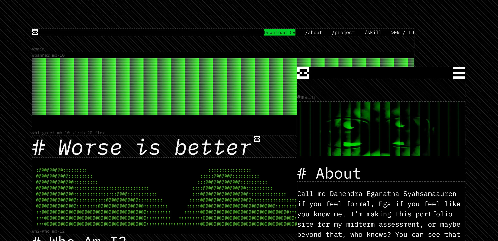
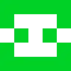
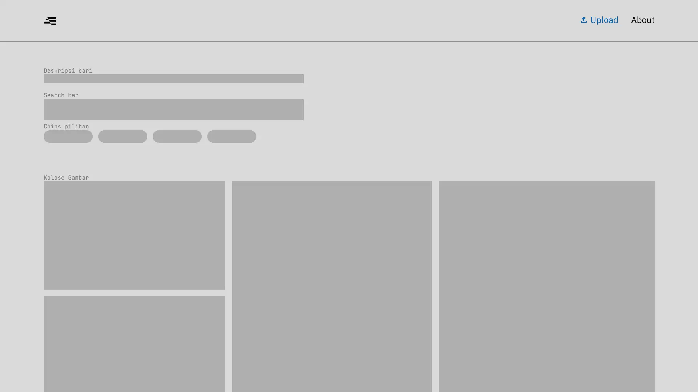
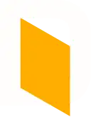
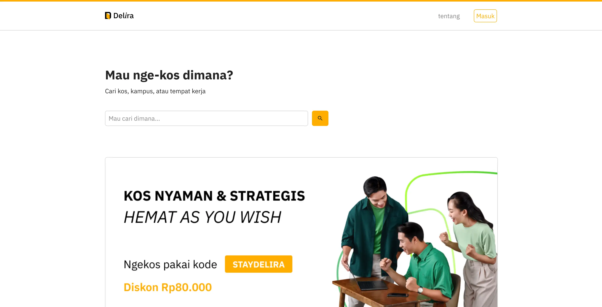
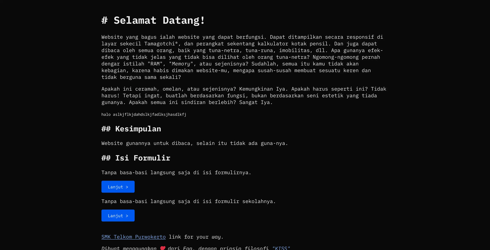

# port-1

Menggunakan Node.js untuk membangun situs statis sederhana ini, dengan menulis skrip cli-ku dengan memanggil tailwindcss dan posthtml untuk membangun dan mengawasi situsku. Aku membuat situs web ini seringan mungkin dalam hal performanya, mungkin sedikit kembung karena asciinema-player tetapi sedikit overhead tidak akan mengaruh, dan cukup responsif agar dapat dibaca. Dalam hal aksesibilitas dalam pendapatku butuh peningkatan. Ramah kompatibilitas, seharusnya kompatibel dengan (dan tidak terbatas dari) Chromium, Gecko (Firefox), mesin basis-webkit.
## Phostel


Yang satu ini untuk ujian tengah semester kelompok saya, serta proposal saya untuk penilaian akhir. Ini adalah situs web non-statis pertama yang ingin saya buat. Terinspirasi dari Flickr, Unsplash, Pinterest, dan tempat repositori gambar lainnya di internet. Saya akan mengerjakan bagian frontend, dan teman-teman saya yang lain akan mengerjakan bagian backend dan pemasaran.
## Delira


Delira, yang merupakan singkatan dari inisial nama-nama kami dalam grup. Ini adalah proyek kolaboratif yang menyatukan DPK-A, DPK-D, dan DPK-E secara bersamaan. Kami terinspirasi oleh mamikos. Sebuah situs web sewa kos yang ada di Indonesia.
## Form

Ini adalah situs statis pertama saya yang hanya menggunakan HTML dan CSS. Ini adalah situs formulir yang sederhana dan tidak fungsional. Ini dibuat karena saya diperkenalkan dengan elemen HTML5 sederhana, dan cara kerja stylesheet, meskipun saya sudah tahu sedikit. Saya menaruh lelucon satir di situs itu supaya tidak ada yang membacanya.